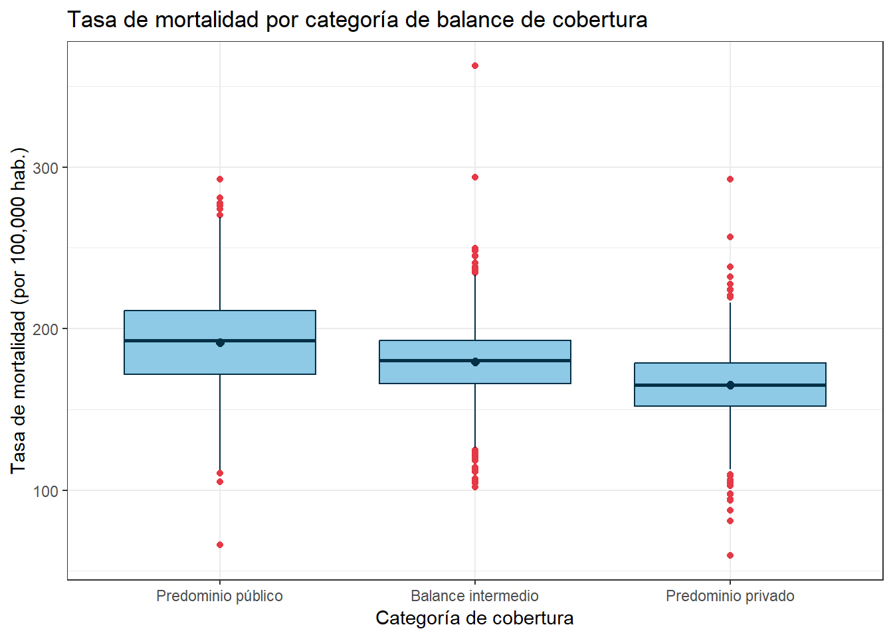
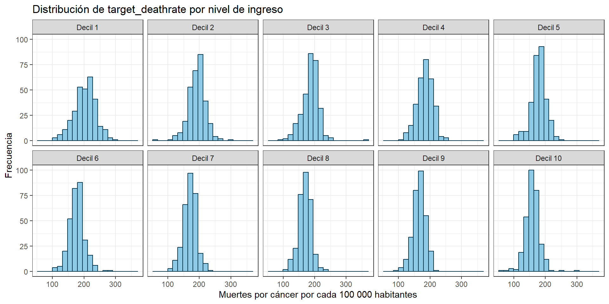
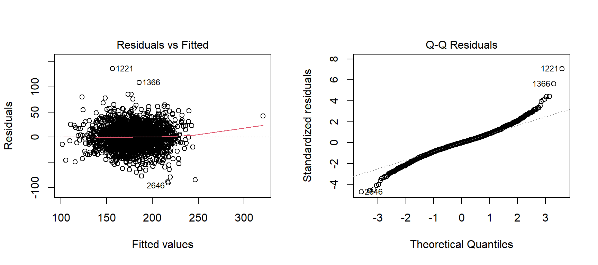

Capítulo 4 Análisis paramétrico y no paramétrico
Mejorando la vista de las salidas (eliminando el prefijo ##)
4.1 Librerías
library(readxl)
library(moments)
library(tidyverse)
library(effsize)
library(openintro)
library(nortest)
library(car)
library(coin)
library(BSDA)
library(rstatix)Se cargan los datos de cáncer.
Resumen de las variables numéricas del conjunto de datos:
data_cancer %>%
select(where(is.numeric)) %>%
pivot_longer(everything(), names_to = "Variable", values_to = "valor") %>%
group_by(Variable) %>%
summarise(Mín = min(valor, na.rm = TRUE),
Q1 = quantile(valor, 0.25, na.rm = TRUE),
Mediana = median(valor, na.rm = TRUE),
Media = mean(valor, na.rm = TRUE),
Q3 = quantile(valor, 0.75, na.rm = TRUE),
Máx = max(valor, na.rm = TRUE),
Faltantes = sum(is.na(valor))) %>%
mutate(Variable = factor(Variable, levels = names(data_cancer))) %>%
arrange(Variable) %>%
knitr::kable(digits = 2, caption = "Resumen de las variables numéricas")| Variable | Mín | Q1 | Mediana | Media | Q3 | Máx | Faltantes |
|---|---|---|---|---|---|---|---|
| avganncount | 6.00 | 76.00 | 171.00 | 606.34 | 518.00 | 38150.00 | 0 |
| avgdeathsperyear | 3.00 | 28.00 | 61.00 | 185.97 | 149.00 | 14010.00 | 0 |
| target_deathrate | 59.70 | 161.20 | 178.10 | 178.66 | 195.20 | 362.80 | 0 |
| incidencerate | 201.30 | 420.30 | 453.55 | 448.27 | 480.85 | 1206.90 | 0 |
| medincome | 22640.00 | 38882.50 | 45207.00 | 47063.28 | 52492.00 | 125635.00 | 0 |
| popest2015 | 827.00 | 11684.00 | 26643.00 | 102637.37 | 68671.00 | 10170292.00 | 0 |
| povertypercent | 3.20 | 12.15 | 15.90 | 16.88 | 20.40 | 47.40 | 0 |
| studypercap | 0.00 | 0.00 | 0.00 | 155.40 | 83.65 | 9762.31 | 0 |
| medianage | 22.30 | 37.70 | 41.00 | 45.27 | 44.00 | 624.00 | 0 |
| medianagemale | 22.40 | 36.35 | 39.60 | 39.57 | 42.50 | 64.70 | 0 |
| medianagefemale | 22.30 | 39.10 | 42.40 | 42.15 | 45.30 | 65.70 | 0 |
| percentmarried | 23.10 | 47.75 | 52.40 | 51.77 | 56.40 | 72.50 | 0 |
| pctnohs18_24 | 0.00 | 12.80 | 17.10 | 18.22 | 22.70 | 64.10 | 0 |
| pcths18_24 | 0.00 | 29.20 | 34.70 | 35.00 | 40.70 | 72.50 | 0 |
| pctsomecol18_24 | 7.10 | 34.00 | 40.40 | 40.98 | 46.40 | 79.00 | 2285 |
| pctbachdeg18_24 | 0.00 | 3.10 | 5.40 | 6.16 | 8.20 | 51.80 | 0 |
| pcths25_over | 7.50 | 30.40 | 35.30 | 34.80 | 39.65 | 54.80 | 0 |
| pctbachdeg25_over | 2.50 | 9.40 | 12.30 | 13.28 | 16.10 | 42.20 | 0 |
| pctemployed16_over | 17.60 | 48.60 | 54.50 | 54.15 | 60.30 | 80.10 | 152 |
| pctunemployed16_over | 0.40 | 5.50 | 7.60 | 7.85 | 9.70 | 29.40 | 0 |
| pctprivatecoverage | 22.30 | 57.20 | 65.10 | 64.35 | 72.10 | 92.30 | 0 |
| pctprivatecoveragealone | 15.70 | 41.00 | 48.70 | 48.45 | 55.60 | 78.90 | 609 |
| pctempprivcoverage | 13.50 | 34.50 | 41.10 | 41.20 | 47.70 | 70.70 | 0 |
| pctpubliccoverage | 11.20 | 30.90 | 36.30 | 36.25 | 41.55 | 65.10 | 0 |
| pctpubliccoveragealone | 2.60 | 14.85 | 18.80 | 19.24 | 23.10 | 46.60 | 0 |
| pctwhite | 10.20 | 77.30 | 90.06 | 83.65 | 95.45 | 100.00 | 0 |
| pctblack | 0.00 | 0.62 | 2.25 | 9.11 | 10.51 | 85.95 | 0 |
| pctasian | 0.00 | 0.25 | 0.55 | 1.25 | 1.22 | 42.62 | 0 |
| pctotherrace | 0.00 | 0.30 | 0.83 | 1.98 | 2.18 | 41.93 | 0 |
| pctmarriedhouseholds | 22.99 | 47.76 | 51.67 | 51.24 | 55.40 | 78.08 | 0 |
| birthrate | 0.00 | 4.52 | 5.38 | 5.64 | 6.49 | 21.33 | 0 |
Ahora, repitamos todas las transformaciones de datos para preparar el análisis estadístico.
En primer lugar, volvamos a imputar los datos faltantes.
data_cancer %>%
mutate(
across(
where(is.numeric),
~ ifelse(is.na(.), mean(., na.rm = TRUE), .)
)
) -> dfVerificar si tiene datos faltantes nuevamente
NA_avganncount NA_avgdeathsperyear NA_target_deathrate NA_incidencerate NA_medincome NA_popest2015 NA_povertypercent
1 0 0 0 0 0 0 0
NA_studypercap NA_binnedinc NA_medianage NA_medianagemale NA_medianagefemale NA_geography NA_percentmarried NA_pctnohs18_24
1 0 0 0 0 0 0 0 0
NA_pcths18_24 NA_pctsomecol18_24 NA_pctbachdeg18_24 NA_pcths25_over NA_pctbachdeg25_over NA_pctemployed16_over
1 0 0 0 0 0 0
NA_pctunemployed16_over NA_pctprivatecoverage NA_pctprivatecoveragealone NA_pctempprivcoverage NA_pctpubliccoverage
1 0 0 0 0 0
NA_pctpubliccoveragealone NA_pctwhite NA_pctblack NA_pctasian NA_pctotherrace NA_pctmarriedhouseholds NA_birthrate
1 0 0 0 0 0 0 0Aplicando nuevamente ingeniería de características entre pctprivatecoverage y pctpubliccoverage.
df <- df %>%
mutate(
coverage_balance = pctprivatecoverage - pctpubliccoverage
) %>%
select(
-pctprivatecoverage,
-pctpubliccoverage
)
df %>%
select(coverage_balance) %>%
head() coverage_balance
1 42.2
2 39.1
3 21.6
4 13.1
5 17.6
6 16.8Se crea la variable nivel_pobreza a través de usar su mediana para poder clasificar el povertypercent.
mediana_pobreza <- median(df$povertypercent)
df <- df %>%
mutate(nivel_pobreza = ifelse(povertypercent >= mediana_pobreza,
"Pobreza alta", "Pobreza baja"),
nivel_pobreza = factor(nivel_pobreza,
levels = c("Pobreza alta", "Pobreza baja")))
table(df$nivel_pobreza)
Pobreza alta Pobreza baja
1525 1522 Luego de esto, la nueva variable nivel_pobreza se divide en “Pobreza alta” y “Pobreza baja”.
4.2 Objetivo 1: supuestos de normalidad y homogeneidad
Ahora separaremos los valores de tasa de mortalidad según el nivel de pobreza.
y_alta <- df %>% filter(nivel_pobreza == "Pobreza alta") %>% pull(target_deathrate)
y_baja <- df %>% filter(nivel_pobreza == "Pobreza baja") %>% pull(target_deathrate)Una vez dividido, observamos que se divide en 1525 condados que clasifican como Pobreza alta y 1522 condados como Pobreza baja. Ahora con Shapiro-Wilk vamos a comprobar su normalidad
Ho: x ~ N(μ, σ²) vs Ha: x !~ N(μ, σ²)
Shapiro-Wilk normality test
data: y_alta
W = 0.9892, p-value = 3.341e-09
Shapiro-Wilk normality test
data: y_baja
W = 0.98964, p-value = 6.355e-09Con un 95% podemos concluir que se rechaza Ho lo cual implica que se rechaza la normalidad de los datos en ambos grupos (p-valor < 0.001). Sin embargo, dado el gran tamaño de los datos en ambos grupos (n>1500), podemos seguir aplicando el t-test de manera robusta, apoyándonos en el Teorema de Límite Central.
Seguidamente, con el uso de var.test vamos a comprobar los supuestos de las varianzas:
Ho: σ²(alta) = σ²(baja) vs Ha: distintas.
n1 <- length(y_alta)
n2 <- length(y_baja)
var_alta <- var(y_alta)
var_baja <- var(y_baja)
F_manual <- var_alta / var_baja
df1 <- n1 - 1
df2 <- n2 - 1
p_valor_F <- 2 * min(pf(F_manual, df1, df2), 1 - pf(F_manual, df1, df2))
IC_inf_F <- (var_alta / var_baja) * (1 / qf(0.975, df1, df2))
IC_sup_F <- (var_alta / var_baja) * (1 / qf(0.025, df1, df2))
F_manual; df1; df2; p_valor_F[1] 1.452463[1] 1524[1] 1521[1] 3.88356e-13[1] 1.313583 1.606017Se verifica con la función de R:
F test to compare two variances
data: y_alta and y_baja
F = 1.4525, num df = 1524, denom df = 1521, p-value = 3.884e-13
alternative hypothesis: true ratio of variances is not equal to 1
95 percent confidence interval:
1.313583 1.606017
sample estimates:
ratio of variances
1.452463 Levene's Test for Homogeneity of Variance (center = median)
Df F value Pr(>F)
group 1 37.734 9.161e-10 ***
3045
---
Signif. codes: 0 '***' 0.001 '**' 0.01 '*' 0.05 '.' 0.1 ' ' 1Por medio de esta prueba podemos concluir que, se rechaza Ho y por ende, las varianzas son distintas (p-valor < 0.05). Finalmente con un 95% de confianza podemos afirmar que existen diferencias significativas entre las varianzas de ambos grupos.
Con base en lo anterior, decidimos utiliza Welch para el desarrollo del objetivo dos dada la diferencia de varianzas.
4.3 Objetivo 2: comparación de la tasa de mortalidad entre niveles de pobreza
En este sentido, ahora queremos comprobar si existe una diferencia significativa entre la tasa de mortalidad promedio:
Ho: μ(alta) = μ(baja) vs Ha: μ(alta) != μ(baja)
media_alta <- mean(y_alta)
media_baja <- mean(y_baja)
diferencia <- media_alta - media_baja
SE_welch <- sqrt(var_alta/n1 + var_baja/n2)
t_manual <- diferencia / SE_welch
gl_welch <- (var_alta/n1 + var_baja/n2)^2 /
((var_alta/n1)^2/(n1-1) + (var_baja/n2)^2/(n2-1))
p_valor_t <- 2 * (1 - pt(abs(t_manual), gl_welch))
IC_inf_t <- diferencia - qt(0.975, gl_welch) * SE_welch
IC_sup_t <- diferencia + qt(0.975, gl_welch) * SE_welch
t_manual; gl_welch; p_valor_t[1] 22.7847[1] 2946.792[1] 0[1] 19.35367 22.99833Se verifica con la función de R:
Welch Two Sample t-test
data: y_alta and y_baja
t = 22.785, df = 2946.8, p-value < 2.2e-16
alternative hypothesis: true difference in means is not equal to 0
95 percent confidence interval:
19.35367 22.99833
sample estimates:
mean of x mean of y
189.2416 168.0656 Con la prueba de Welch obtenemos que la media del grupo de Pobreza alta es de aproximadamente 189.24, mientras que la del grupo de Pobreza baja aproximadamente de 168.07, esto con una diferencia de aproximandamente 21.18. El estadístico t de Welch es t = 22.79 con gl = 2946.8 y p-valor = 0 aproxidamamente. En síntesis, se evidencia el rechazo de Ho (p-valor < 0.05), por lo que existe una diferencia significativa entre la tasa de mortalidad promedio de ambos grupos. Con un 95% de confianza, también podemos observar un intervalo de confianza de [19.35 , 22.99].
Por otra parte, dado el rechazo de normalidad que nos brindó la prueba de Shapiro-Wilk, pese a que no se eliminara la validez del t-test dado el TCL, aplicaremos la prueba de Wilcoxon:
Wilcoxon rank sum test with continuity correction
data: y_alta and y_baja
W = 1690588, p-value < 2.2e-16
alternative hypothesis: true location shift is not equal to 0La prueba de Wilcoxon con un 95% de confianza nos arroja un estadístico W = 1690588, con un p-valor = 0 aproximadamente (p-valor < 0.05). Por lo tanto se rechaza Ho, y podemos concluir que existe una diferencia estadísticamente significativa en la distribución de la tasa de mortalidad entre los grupos de Pobreza alta y Pobreza baja. Este resultado coincide con la prueba de Welch, lo cual refuerza la robustez de esta conclusión al ser respaldada por pruebas paramétricas y no paramétricas.
Finalmente, se medirá el tamaño del efecto:
Cohen's d
d estimate: 0.8253885 (large)
95 percent confidence interval:
lower upper
0.7513835 0.8993936 Con un 95% de confianza podemos afirmar que el tamaño del efecto obtenido mediante la d de Cohen nos brinda un valor d = 0.825, que se acompaña junto con un intervalo de confianza de [0.761, 0.899], lo que corresponde a un tamaño de efecto grande dado que d > 0.8. Esto indica que la diferencia entre la tasa de mortalidad por cáncer entre condados de pobreza alta y baja no es solo algo estadísticamente significativo, sino que es relevante desde un punto de vista práctico y real.
4.4 Objetivo 3. Cuantificar la asociación lineal
Para verificar si el uso de correlación de Pearson es apropiado se evalúan los supuestos de normalidad
variables_corr <- c("target_deathrate","medincome", "pctbachdeg25_over", "coverage_balance", "pctunemployed16_over")Aplicando Shapiro-Wilk por tener menos de 5000 observaciones
# Shapiro-Wilk
resultados_shapiro <- lapply(variables_corr, function(v) {
test <- shapiro.test(df[[v]])
data.frame(variable = v, estadistico = round(test$statistic, 4), p_value = round(test$p.value, 4))
}) %>% bind_rows()
resultados_shapiro variable estadistico p_value
W...1 target_deathrate 0.9903 0
W...2 medincome 0.9169 0
W...3 pctbachdeg25_over 0.9376 0
W...4 coverage_balance 0.9968 0
W...5 pctunemployed16_over 0.9629 0Verificando con la prueba de Anderson-Darling
resultados_ad <- lapply(variables_corr, function(v) {
test <- ad.test(df[[v]])
data.frame(variable = v, estadistico = round(test$statistic, 4), p_value = round(test$p.value, 4))
}) %>% bind_rows()
resultados_ad variable estadistico p_value
A...1 target_deathrate 4.0742 0
A...2 medincome 47.2850 0
A...3 pctbachdeg25_over 42.1478 0
A...4 coverage_balance 2.0212 0
A...5 pctunemployed16_over 14.5589 0Tanto la prueba de Shapiro-Wilk como la prueba de Anderson-Darling confirman
resultados consistentes entre sí: con un 95% de confianza, se rechaza la
hipótesis de normalidad para las cinco variables evaluadas, ya que todos
los p-valores obtenidos son menores a 0.01 (prácticamente iguales a 0).
Esto indica que ni la variable respuesta (target_deathrate) ni ninguna de
las variables predictoras (medincome, pctbachdeg25_over,
coverage_balance, pctunemployed16_over) sigue una distribución normal.
Es importante destacar que coverage_balance presenta el estadístico de
Shapiro-Wilk más cercano a 1 (W = 0.9968) y el valor más bajo de
Anderson-Darling (A = 2.02) entre todas las variables, lo cual sugiere que,
aunque el supuesto de normalidad se rechaza formalmente por el tamaño
muestral, esta variable es la que más se aproxima a un comportamiento
normal —consistente con lo observado en el EDA, donde presentó una
distribución casi simétrica con curtosis cercana a 3. En contraste,
medincome y pctbachdeg25_over muestran los estadísticos de
Anderson-Darling más altos (47.29 y 42.15, respectivamente), reflejando una
desviación más marcada de la normalidad, en línea con los altos
coeficientes de asimetría y curtosis identificados previamente para ambas
variables.
Dado que el supuesto de normalidad no se cumple para ninguna de las variables involucradas, se procede a estimar la asociación mediante coeficientes de correlación no paramétricos.
En primer lugar, se calcula el coeficiente de correlación de Spearman:
resultados_spearman <- lapply(variables_corr[-1], function(v) {
test <- cor.test(df[[v]], df$target_deathrate, method = "spearman")
data.frame(
variable = v,
correlacion = round(test$estimate, 3),
p_value = round(test$p.value, 4)
)
}) %>% bind_rows()Warning in cor.test.default(df[[v]], df$target_deathrate, method = "spearman"): Cannot compute exact p-value with ties
Warning in cor.test.default(df[[v]], df$target_deathrate, method = "spearman"): Cannot compute exact p-value with ties
Warning in cor.test.default(df[[v]], df$target_deathrate, method = "spearman"): Cannot compute exact p-value with ties
Warning in cor.test.default(df[[v]], df$target_deathrate, method = "spearman"): Cannot compute exact p-value with ties variable correlacion p_value
rho...1 medincome -0.463 0
rho...2 pctbachdeg25_over -0.502 0
rho...3 coverage_balance -0.430 0
rho...4 pctunemployed16_over 0.403 0Posteriormente, se verifican los resultados mediante el coeficiente de correlación de Kendall’s Tau, dado que la presencia de valores repetidos (empates) en los datos impide calcular un p-valor exacto para Spearman:
resultados_kendall <- lapply(variables_corr[-1], function(v) {
test <- cor.test(df[[v]], df$target_deathrate, method = "kendall")
data.frame(
variable = v,
correlacion = round(test$estimate, 3),
p_value = round(test$p.value, 4)
)
}) %>% bind_rows()
resultados_kendall variable correlacion p_value
tau...1 medincome -0.325 0
tau...2 pctbachdeg25_over -0.355 0
tau...3 coverage_balance -0.305 0
tau...4 pctunemployed16_over 0.283 0pctbachdeg25_over presenta la asociación más fuerte con target_deathrate
(ρ = -0.502, τ = -0.355), de signo negativo, lo que indica que a mayor
porcentaje de personas con título universitario, menor tiende a ser la
tasa de mortalidad por cáncer. Le sigue medincome (ρ = -0.463, τ = -0.325),
también con relación negativa, consistente con la idea de que un mayor
ingreso medio se asocia con menor mortalidad. coverage_balance muestra
una asociación negativa de magnitud similar (ρ = -0.430, τ = -0.305), lo
que sugiere que un mayor predominio de cobertura privada frente a la
pública se relaciona con tasas de mortalidad más bajas. Finalmente,
pctunemployed16_over es la única variable con asociación positiva
(ρ = 0.403, τ = 0.283), indicando que a mayor tasa de desempleo, mayor
tiende a ser la mortalidad por cáncer.
En todos los casos, los p-valores son menores a 0.001, por lo que las
cuatro asociaciones son estadísticamente significativas al 95% de
confianza, y ambos coeficientes coinciden tanto en el signo como en el
orden de fuerza de las variables, lo que respalda la consistencia de los
resultados. En términos de magnitud, todas las correlaciones se ubican en
un rango moderado (entre 0.3 y 0.5 en valor absoluto), lo cual confirma lo
observado en los diagramas de dispersión del EDA: cada variable por sí
sola guarda una relación real pero no lo suficientemente fuerte como para
explicar la totalidad de la variabilidad de target_deathrate, reforzando
la necesidad de un modelo de regresión múltiple que capture el efecto
conjunto de estas variables.
4.5 Objetivo 4. Contrastar el efecto del balance de cobertura médica
Paso 1: Categorización de coverage_balance en 3 grupos (terciles)
Se optó por dividir coverage_balance en terciles (en lugar de utilizar
puntos de corte fijos o arbitrarios) porque este método garantiza que cada
grupo contenga aproximadamente el mismo número de observaciones (33.3% de
los datos cada uno), lo cual es preferible para un análisis de varianza, ya
que grupos con tamaños muestrales muy desbalanceados pueden afectar la
potencia estadística de la prueba y la validez del supuesto de
homogeneidad de varianzas. Además, al basarse en los percentiles reales de
la distribución de la variable (y no en umbrales predefinidos sin
fundamento estadístico, como 0 o 30), los terciles reflejan de forma más
fiel la estructura y variabilidad observada en los datos, evitando que la
elección subjetiva de los puntos de corte introduzca sesgos en la
comparación de grupos.
terciles <- quantile(df$coverage_balance, probs = c(1/3, 2/3))
df <- df %>%
mutate(categoria_cobertura = case_when(
coverage_balance <= terciles[1] ~ "Predominio público",
coverage_balance <= terciles[2] ~ "Balance intermedio",
TRUE ~ "Predominio privado"
)) %>%
mutate(categoria_cobertura = factor(categoria_cobertura,
levels = c("Predominio público", "Balance intermedio", "Predominio privado")))
table(df$categoria_cobertura)
Predominio público Balance intermedio Predominio privado
1016 1020 1011 Paso 2: Resumen descriptivo de target_deathrate por grupo
df %>%
group_by(categoria_cobertura) %>%
summarise(
n = length(target_deathrate),
media = mean(target_deathrate),
d_est = sd(target_deathrate),
mediana = median(target_deathrate),
RIC = IQR(target_deathrate),
Q1 = quantile(target_deathrate, 0.25),
Q3 = quantile(target_deathrate, 0.75),
min = min(target_deathrate),
max = max(target_deathrate),
curtosis = kurtosis(target_deathrate),
Coef_asim = skewness(target_deathrate)
)# A tibble: 3 × 12
categoria_cobertura n media d_est mediana RIC Q1 Q3 min max curtosis Coef_asim
<fct> <int> <dbl> <dbl> <dbl> <dbl> <dbl> <dbl> <dbl> <dbl> <dbl> <dbl>
1 Predominio público 1016 191. 29.9 193. 39.5 172. 211 66.3 292. 3.45 -0.0332
2 Balance intermedio 1020 180. 23.6 180. 27.1 166. 193. 102. 363. 7.11 0.395
3 Predominio privado 1011 165. 22.7 165. 26.8 152. 179. 59.7 292. 4.82 -0.0589El resumen descriptivo de target_deathrate por categoría de balance de
cobertura muestra que la media de mortalidad disminuye a medida que
aumenta el predominio de la cobertura privada, pasando de 191.26 en
“Predominio público” a 179.66 en “Balance intermedio” y 164.99 en
“Predominio privado” —una diferencia de aproximadamente 26 muertes por
cada 100,000 habitantes entre los grupos extremos. Este mismo patrón se
replica en la mediana, lo que refuerza la consistencia de la tendencia.
Los tres grupos presentan tamaños muestrales muy similares (1016, 1020 y 1011 respectivamente), como era de esperarse al dividir la variable en terciles. En cuanto a la dispersión, “Predominio público” muestra la mayor variabilidad (DE = 29.89, RIC = 39.45), mientras que “Predominio privado” es el más homogéneo (DE = 22.66, RIC = 26.80), sugiriendo que las regiones con mayor dependencia de cobertura pública no solo presentan mortalidad más alta en promedio, sino también más heterogénea.
Respecto a la forma de las distribuciones, “Balance intermedio” destaca por una curtosis notablemente más alta (7.11) que los otros dos grupos (3.45 y 4.82), lo que indica una concentración de datos más marcada alrededor de su media junto con colas más pesadas —consistente con su valor máximo considerablemente más alto (362.8) respecto a los otros dos grupos. En cuanto a la asimetría, los tres grupos muestran coeficientes cercanos a cero (entre -0.06 y 0.39), indicando distribuciones razonablemente simétricas dentro de cada categoría, con “Balance intermedio” presentando el sesgo positivo más notorio.
Paso 3: Visualización - boxplot por grupo
df %>%
ggplot(aes(x = categoria_cobertura, y = target_deathrate)) +
geom_boxplot(fill = "#8ecae6", color = "#023047",
outlier.color = "#e63946")+
stat_summary(fun = mean, geom = 'point', shape = 20, size = 3, color = '#023047') +
labs(title = "Tasa de mortalidad por categoría de balance de cobertura",
x = "Categoría de cobertura", y = "Tasa de mortalidad (por 100,000 hab.)") +
theme_bw() +
theme(legend.position = "none")
El diagrama de cajas y bigotes muestra un patrón claro entre las tres categorías: a medida que aumenta el predominio de la cobertura privada sobre la pública, la tasa de mortalidad por cáncer tiende a disminuir. El grupo de “Predominio público” presenta la mediana más alta (cercana a 190), seguido por “Balance intermedio” (mediana alrededor de 180), y finalmente “Predominio privado” con la mediana más baja (cercana a 165).
Asimismo, se observa que la dispersión de los datos disminuye ligeramente a medida que aumenta el predominio de la cobertura privada, siendo el grupo de “Predominio público” el que presenta el rango intercuartílico más amplio. Los tres grupos muestran una cantidad considerable de valores atípicos en ambos extremos, particularmente en la cola superior.
En conjunto, estas diferencias visuales entre las medianas de los tres grupos sugieren que el tipo de cobertura médica predominante podría estar asociado con diferencias en la tasa de mortalidad, lo cual será contrastado formalmente mediante la prueba de análisis de varianza (o su alternativa no paramétrica, según los supuestos evaluados).
Paso 4: Verificar supuestos de ANOVA
Se prueba la normalidad de target_deathrate dentro de cada grupo con la prueba Shapiro-Wilk y verificando con la prueba Anderson-Darling
df %>%
group_by(categoria_cobertura) %>%
summarise(
shapiro_W = round(shapiro.test(target_deathrate)$statistic, 4),
shapiro_p = round(shapiro.test(target_deathrate)$p.value, 4),
ad_stat = round(ad.test(target_deathrate)$statistic, 4),
ad_p = round(ad.test(target_deathrate)$p.value, 4)
)# A tibble: 3 × 5
categoria_cobertura shapiro_W shapiro_p ad_stat ad_p
<fct> <dbl> <dbl> <dbl> <dbl>
1 Predominio público 0.996 0.0092 1.17 0.0047
2 Balance intermedio 0.971 0 3.26 0
3 Predominio privado 0.986 0 1.93 0.0001Los resultados muestran que se rechaza la hipótesis de normalidad en los tres grupos (p < 0.05 en todos los casos, tanto para Shapiro-Wilk como para Anderson-Darling). El grupo “Predominio público” presenta el p-valor más alto en ambas pruebas (Shapiro: p = 0.0092; Anderson-Darling: p = 0.0047), indicando que, aunque técnicamente no cumple normalidad, es el que más se aproxima a ella entre los tres. En contraste, “Balance intermedio” muestra el rechazo más contundente (p < 0.001 en ambas pruebas), consistente con la elevada curtosis (7.11) identificada previamente en su resumen descriptivo, producto del valor atípico presente en ese grupo.
Dado que el supuesto de normalidad no se cumple en ninguno de los tres grupos, se opta por la alternativa no paramétrica de ANOVA, es decir, prueba de Kruskal-Wallis.
Paso 5: Implementar el modelo pertinente
Kruskal-Wallis rank sum test
data: target_deathrate by categoria_cobertura
Kruskal-Wallis chi-squared = 491.08, df = 2, p-value < 2.2e-16Dado que no se cumple el supuesto de normalidad en ninguno de los tres grupos, se aplica la prueba no paramétrica de Kruskal-Wallis como alternativa al ANOVA clásico. El resultado obtenido (χ² = 491.08, gl = 2, p < 2.2e-16) indica que se rechaza la hipótesis nula de igualdad de distribuciones entre los tres grupos, con un nivel de significancia muy por debajo de 0.001. Esto confirma, con alta confianza estadística, que existen diferencias significativas en la tasa de mortalidad por cáncer entre las categorías de balance de cobertura médica (predominio público, balance intermedio y predominio privado).
Este resultado es consistente con el patrón observado en el análisis
descriptivo, donde las medias y medianas de target_deathrate mostraban
una disminución progresiva desde el grupo de predominio público hacia el
de predominio privado. Para determinar específicamente entre qué pares de
grupos existen estas diferencias, se procede a realizar un análisis
post-hoc mediante la prueba de Dunn.
# A tibble: 3 × 9
.y. group1 group2 n1 n2 statistic p p.adj p.adj.signif
* <chr> <chr> <chr> <int> <int> <dbl> <dbl> <dbl> <chr>
1 target_deathrate Predominio público Balance intermedio 1016 1020 -8.90 5.64e- 19 1.69e- 18 ****
2 target_deathrate Predominio público Predominio privado 1016 1011 -22.0 1.63e-107 4.89e-107 ****
3 target_deathrate Balance intermedio Predominio privado 1020 1011 -13.2 1.50e- 39 4.51e- 39 **** El análisis post-hoc mediante la prueba de Dunn confirma que las diferencias son estadísticamente significativas entre todos los pares de grupos comparados (p.adj < 0.001 en los tres casos, con el máximo nivel de significancia posible, indicado por ****).
La diferencia más marcada se observa entre “Predominio público” y “Predominio privado” (estadístico = -22.03, p.adj ≈ 4.89e-107), lo cual es coherente con que estos representan los extremos opuestos del espectro de cobertura médica. Le sigue la comparación entre “Balance intermedio” y “Predominio privado” (estadístico = -13.16, p.adj ≈ 4.51e-39), y finalmente la diferencia menos pronunciada, aunque igualmente significativa, entre “Predominio público” y “Balance intermedio” (estadístico = -8.90, p.adj ≈ 1.69e-18).
En conjunto, estos resultados confirman que la tasa de mortalidad por cáncer difiere significativamente entre las tres categorías de balance de cobertura médica, y que dicha diferencia sigue un patrón gradual y consistente: a mayor predominio de cobertura privada, menor es la tasa de mortalidad, validando estadísticamente la tendencia observada en el análisis descriptivo y gráfico previo.
4.6 Objetivo 5: asociación entre nivel de ingreso y mortalidad
4.6.1 Análisis estadístico de las diferencias en target_deathrate según binnedinc
Primeramente, se verifica normalidad por grupo mediante Shapiro-Wilk.
df %>%
group_by(binnedinc) %>%
summarise(shapiro_W = round(shapiro.test(target_deathrate)$statistic, 4),
shapiro_p = round(shapiro.test(target_deathrate)$p.value, 4))# A tibble: 10 × 3
binnedinc shapiro_W shapiro_p
<chr> <dbl> <dbl>
1 (34218.1, 37413.8] 0.976 0.0001
2 (37413.8, 40362.7] 0.931 0
3 (40362.7, 42724.4] 0.993 0.149
4 (42724.4, 45201] 0.979 0.0002
5 (45201, 48021.6] 0.984 0.0022
6 (48021.6, 51046.4] 0.991 0.0619
7 (51046.4, 54545.6] 0.992 0.0844
8 (54545.6, 61494.5] 0.988 0.0119
9 (61494.5, 125635] 0.942 0
10 [22640, 34218.1] 0.994 0.211 Con un 95% de confianza, la prueba de Shapiro-Wilk muestra resultados mixtos entre los 10 grupos de ingreso: en 4 de ellos ([22640, 34218.1], (40362.7, 42724.4], (48021.6, 51046.4], (51046.4, 54545.6]) no se rechaza la normalidad (p > 0.05), mientras que en los 6 restantes sí se rechaza (p < 0.05). Dado que la normalidad no se cumple en la mayoría de los grupos, se opta por la alternativa no paramétrica de Kruskal-Wallis.
Kruskal-Wallis rank sum test
data: target_deathrate by binnedinc
Kruskal-Wallis chi-squared = 651.49, df = 9, p-value < 2.2e-16La prueba de Kruskal-Wallis arroja un estadístico χ² = 651.49, con gl = 9 y un p-valor prácticamente igual a 0 (p < 0.05). Se rechaza Ho: existen diferencias estadísticamente significativas en la distribución de target_deathrate entre al menos dos de los 10 grupos de nivel de ingreso.
Para identificar específicamente qué pares de grupos difieren, se aplica una comparación post-hoc.
# A tibble: 45 × 9
.y. group1 group2 n1 n2 statistic p p.adj p.adj.signif
* <chr> <chr> <chr> <int> <int> <dbl> <dbl> <dbl> <chr>
1 target_deathrate (34218.1, 37413.8] (37413.8, 40362.7] 304 304 -2.39 1.69e- 2 7.61e- 1 ns
2 target_deathrate (34218.1, 37413.8] (40362.7, 42724.4] 304 304 -3.91 9.39e- 5 4.23e- 3 **
3 target_deathrate (34218.1, 37413.8] (42724.4, 45201] 304 305 -6.12 9.22e-10 4.15e- 8 ****
4 target_deathrate (34218.1, 37413.8] (45201, 48021.6] 304 306 -7.70 1.37e-14 6.16e-13 ****
5 target_deathrate (34218.1, 37413.8] (48021.6, 51046.4] 304 305 -10.6 3.83e-26 1.72e-24 ****
6 target_deathrate (34218.1, 37413.8] (51046.4, 54545.6] 304 305 -11.3 1.10e-29 4.96e-28 ****
7 target_deathrate (34218.1, 37413.8] (54545.6, 61494.5] 304 306 -13.0 9.62e-39 4.33e-37 ****
8 target_deathrate (34218.1, 37413.8] (61494.5, 125635] 304 302 -16.3 1.87e-59 8.39e-58 ****
9 target_deathrate (34218.1, 37413.8] [22640, 34218.1] 304 306 2.54 1.10e- 2 4.97e- 1 ns
10 target_deathrate (37413.8, 40362.7] (40362.7, 42724.4] 304 304 -1.52 1.29e- 1 1 e+ 0 ns
# ℹ 35 more rowsEl análisis post-hoc mediante la prueba de Dunn (con ajuste de Bonferroni) muestra que, de los 45 pares de grupos comparados, 36 presentan diferencias estadísticamente significativas (p.adj < 0.05) y 9 no (p.adj ≥ 0.05). Los 9 pares no significativos corresponden, sin excepción, a grupos de ingreso consecutivos, mientras que las comparaciones entre grupos más distantes entre sí resultan significativas.
Este patrón es coherente con la tendencia descendente y gradual observada en el resumen descriptivo y el boxplot del EDA: como la mortalidad decrece de forma progresiva a medida que aumenta el ingreso, dos grupos consecutivos no logran mostrar una diferencia lo suficientemente grande como para ser estadísticamente detectable, mientras que grupos más alejados en la escala sí la muestran.
4.6.2 Prueba Chi-cuadrado de independencia
Se categoriza target_deathrate en niveles de mortalidad alto/bajo según su mediana.
mediana_target <- median(df$target_deathrate)
df <- df %>%
mutate(mortalidad_nivel = ifelse(target_deathrate >= mediana_target, "Alta", "Baja"),
mortalidad_nivel = factor(mortalidad_nivel, levels = c("Alta", "Baja")))
table(df$mortalidad_nivel)
Alta Baja
1527 1520 Ho: el nivel de ingreso y el nivel de mortalidad son independientes. Ha: existe asociación entre el nivel de ingreso y el nivel de mortalidad.
Alta Baja
(34218.1, 37413.8] 221 83
(37413.8, 40362.7] 214 90
(40362.7, 42724.4] 192 112
(42724.4, 45201] 170 135
(45201, 48021.6] 151 155
(48021.6, 51046.4] 113 192
(51046.4, 54545.6] 100 205
(54545.6, 61494.5] 80 226
(61494.5, 125635] 47 255
[22640, 34218.1] 239 67
Pearson's Chi-squared test
data: tabla_contingencia
X-squared = 504.54, df = 9, p-value < 2.2e-16La prueba Chi-cuadrado de Pearson arroja un estadístico χ² = 504.54, con gl = 9 y un p-valor prácticamente igual a 0 (p < 0.05). Se rechaza Ho: existe una asociación estadísticamente significativa entre el nivel de ingreso (binnedinc) y el nivel de mortalidad (mortalidad_nivel) — ambas variables no son independientes. Este resultado confirma lo observado anteriormente: los condados de menor ingreso presentan una mayor proporción de mortalidad alta, mientras que los de mayor ingreso presentan una mayor proporción de mortalidad baja.
4.7 Objetivo 7: modelo con variable categórica
El conjunto de datos tiene una sola variable categórica: binnedinc, que agrupa los condados en 10 rangos de ingreso medio (deciles de medincome). En este objetivo se incorpora esa variable a la regresión mediante variables dummy (indicadoras), siguiendo dos pasos:
- Un modelo con
binnedinccomo única covariable, para estimar la diferencia de mortalidad de cada rango de ingreso frente a un rango de referencia. - Un modelo múltiple que combina
binnedinccon las variables del modelo de regresión lineal múltiple del objetivo 6 (Capítulo 5), para saber si el nivel de ingreso conserva un efecto propio una vez se controla por las demás variables.
4.7.1 Variables dummy
Una variable dummy toma solo los valores 0 o 1 e indica si una observación pertenece o no a una categoría. Una variable con \(k\) categorías se representa con \(k - 1\) dummies; la categoría que queda sin dummy es la referencia. Si se incluyeran las \(k\) dummies junto con el intercepto, la suma de todas ellas sería igual a la columna de unos y el modelo no se podría estimar (trampa de las variables dummy).
Como binnedinc tiene 10 niveles, se crean 9 dummies. Se toma como referencia el decil 1 (el ingreso más bajo, de 22 640 a 34 218 dólares), de modo que cada coeficiente mide cuánto cambia la mortalidad en un rango de ingreso más alto respecto a los condados más pobres:
\[D_{ji} = \begin{cases} 1 & \text{si el condado } i \text{ pertenece al decil } j \\ 0 & \text{en otro caso} \end{cases} \qquad j = 2, \dots, 10\]
library(tidyverse)
library(knitr) # kable
library(car) # vif, linearHypothesis
library(lmtest) # bptest, coeftest
library(sandwich) # vcovHC (errores estándar robustos)Se cargan los datos, se imputan los faltantes con la media (igual que en el resto del análisis) y se convierte binnedinc en factor. Para que los coeficientes sean legibles, los niveles se renombran como “Decil 1” a “Decil 10”.
datos_cat <- read.csv("Data/cancer_reg.csv") %>%
mutate(across(where(is.numeric), ~ ifelse(is.na(.), mean(., na.rm = TRUE), .)))
rangos_ingreso <- c("[22640, 34218.1]", "(34218.1, 37413.8]", "(37413.8, 40362.7]",
"(40362.7, 42724.4]", "(42724.4, 45201]", "(45201, 48021.6]",
"(48021.6, 51046.4]", "(51046.4, 54545.6]", "(54545.6, 61494.5]",
"(61494.5, 125635]")
datos_cat <- datos_cat %>%
mutate(ingreso = factor(binnedinc, levels = rangos_ingreso,
labels = paste("Decil", 1:10)))
sum(is.na(datos_cat$ingreso)) # todos los rangos quedaron asignados[1] 0[1] "Decil 1"datos_cat %>%
count(ingreso, binnedinc, name = "Condados") %>%
rename(Nivel = ingreso, `Rango de ingreso medio (USD)` = binnedinc) %>%
kable(caption = "Niveles de la variable categórica y su rango de ingreso")| Nivel | Rango de ingreso medio (USD) | Condados |
|---|---|---|
| Decil 1 | [22640, 34218.1] | 306 |
| Decil 2 | (34218.1, 37413.8] | 304 |
| Decil 3 | (37413.8, 40362.7] | 304 |
| Decil 4 | (40362.7, 42724.4] | 304 |
| Decil 5 | (42724.4, 45201] | 305 |
| Decil 6 | (45201, 48021.6] | 306 |
| Decil 7 | (48021.6, 51046.4] | 305 |
| Decil 8 | (51046.4, 54545.6] | 305 |
| Decil 9 | (54545.6, 61494.5] | 306 |
| Decil 10 | (61494.5, 125635] | 302 |
4.7.2 Exploración de la mortalidad por nivel de ingreso
datos_cat %>%
ggplot(aes(target_deathrate)) +
geom_histogram(bins = 20, fill = "#8ecae6", color = "#023047") +
facet_wrap(vars(ingreso), ncol = 5) +
labs(title = "Distribución de target_deathrate por nivel de ingreso",
x = "Muertes por cáncer por cada 100 000 habitantes", y = "Frecuencia") +
theme_bw()
medias_ingreso <- datos_cat %>%
group_by(ingreso) %>%
summarise(n = n(),
media = mean(target_deathrate),
d_est = sd(target_deathrate)) %>%
mutate(diferencia_vs_decil1 = media - first(media))
medias_ingreso %>%
kable(digits = 2, caption = "Tasa media de mortalidad por nivel de ingreso")| ingreso | n | media | d_est | diferencia_vs_decil1 |
|---|---|---|---|---|
| Decil 1 | 306 | 202.70 | 33.87 | 0.00 |
| Decil 2 | 304 | 192.64 | 26.89 | -10.06 |
| Decil 3 | 304 | 186.61 | 26.76 | -16.09 |
| Decil 4 | 304 | 183.91 | 24.41 | -18.80 |
| Decil 5 | 305 | 178.88 | 23.93 | -23.82 |
| Decil 6 | 306 | 176.83 | 24.31 | -25.87 |
| Decil 7 | 305 | 170.71 | 21.02 | -32.00 |
| Decil 8 | 305 | 169.57 | 20.00 | -33.13 |
| Decil 9 | 306 | 165.60 | 20.65 | -37.10 |
| Decil 10 | 302 | 159.07 | 23.17 | -43.64 |
Los histogramas se desplazan hacia la izquierda a medida que sube el nivel de ingreso. La media pasa de 202.70 muertes por cada 100 000 habitantes en el decil 1 a 159.07 en el decil 10, una diferencia de 43.64. La caída es continua: cada decil tiene una media menor que el anterior.
4.7.3 Matriz de diseño
R crea las dummies automáticamente cuando la variable es un factor. La función model.matrix() muestra la codificación; a continuación se ve una fila de cada nivel:
una_fila_por_nivel <- datos_cat %>%
group_by(ingreso) %>%
slice(1) %>%
ungroup()
X_dummy <- model.matrix(~ ingreso, data = una_fila_por_nivel)
colnames(X_dummy) <- sub("ingreso", "", colnames(X_dummy))
rownames(X_dummy) <- levels(datos_cat$ingreso)
kable(X_dummy, caption = "Codificación dummy de binnedinc (referencia: Decil 1)")| (Intercept) | Decil 2 | Decil 3 | Decil 4 | Decil 5 | Decil 6 | Decil 7 | Decil 8 | Decil 9 | Decil 10 | |
|---|---|---|---|---|---|---|---|---|---|---|
| Decil 1 | 1 | 0 | 0 | 0 | 0 | 0 | 0 | 0 | 0 | 0 |
| Decil 2 | 1 | 1 | 0 | 0 | 0 | 0 | 0 | 0 | 0 | 0 |
| Decil 3 | 1 | 0 | 1 | 0 | 0 | 0 | 0 | 0 | 0 | 0 |
| Decil 4 | 1 | 0 | 0 | 1 | 0 | 0 | 0 | 0 | 0 | 0 |
| Decil 5 | 1 | 0 | 0 | 0 | 1 | 0 | 0 | 0 | 0 | 0 |
| Decil 6 | 1 | 0 | 0 | 0 | 0 | 1 | 0 | 0 | 0 | 0 |
| Decil 7 | 1 | 0 | 0 | 0 | 0 | 0 | 1 | 0 | 0 | 0 |
| Decil 8 | 1 | 0 | 0 | 0 | 0 | 0 | 0 | 1 | 0 | 0 |
| Decil 9 | 1 | 0 | 0 | 0 | 0 | 0 | 0 | 0 | 1 | 0 |
| Decil 10 | 1 | 0 | 0 | 0 | 0 | 0 | 0 | 0 | 0 | 1 |
El decil 1 tiene todas las dummies en 0, por eso es la referencia. Cada uno de los otros niveles tiene un 1 únicamente en su propia columna.
4.7.4 Modelo 1: binnedinc como única covariable
\[Y_i = \beta_0 + \beta_2 D_{2i} + \beta_3 D_{3i} + \dots + \beta_{10} D_{10,i} + \varepsilon_i\]
Con esta codificación, \(\beta_0\) es la mortalidad media del decil 1 y \(\beta_0 + \beta_j\) es la mortalidad media del decil \(j\). Por lo tanto, \(\beta_j\) es la diferencia de medias entre el decil \(j\) y el decil 1.
Call:
lm(formula = target_deathrate ~ ingreso, data = datos_cat)
Residuals:
Min 1Q Median 3Q Max
-126.338 -13.809 1.191 14.713 176.191
Coefficients:
Estimate Std. Error t value Pr(>|t|)
(Intercept) 202.701 1.418 142.958 < 2e-16 ***
ingresoDecil 2 -10.063 2.009 -5.010 5.75e-07 ***
ingresoDecil 3 -16.092 2.009 -8.012 1.59e-15 ***
ingresoDecil 4 -18.795 2.009 -9.358 < 2e-16 ***
ingresoDecil 5 -23.824 2.007 -11.871 < 2e-16 ***
ingresoDecil 6 -25.871 2.005 -12.902 < 2e-16 ***
ingresoDecil 7 -31.995 2.007 -15.943 < 2e-16 ***
ingresoDecil 8 -33.128 2.007 -16.507 < 2e-16 ***
ingresoDecil 9 -37.100 2.005 -18.502 < 2e-16 ***
ingresoDecil 10 -43.636 2.012 -21.689 < 2e-16 ***
---
Signif. codes: 0 '***' 0.001 '**' 0.01 '*' 0.05 '.' 0.1 ' ' 1
Residual standard error: 24.8 on 3037 degrees of freedom
Multiple R-squared: 0.2035, Adjusted R-squared: 0.2012
F-statistic: 86.24 on 9 and 3037 DF, p-value: < 2.2e-16Se comprueba que el intercepto más cada coeficiente reproduce exactamente la media de cada grupo:
b <- coef(mod_cat1)
tibble(Nivel = levels(datos_cat$ingreso),
`Media observada` = medias_ingreso$media,
`Media según el modelo` = c(b[1], b[1] + b[-1])) %>%
kable(digits = 2)| Nivel | Media observada | Media según el modelo |
|---|---|---|
| Decil 1 | 202.70 | 202.70 |
| Decil 2 | 192.64 | 192.64 |
| Decil 3 | 186.61 | 186.61 |
| Decil 4 | 183.91 | 183.91 |
| Decil 5 | 178.88 | 178.88 |
| Decil 6 | 176.83 | 176.83 |
| Decil 7 | 170.71 | 170.71 |
| Decil 8 | 169.57 | 169.57 |
| Decil 9 | 165.60 | 165.60 |
| Decil 10 | 159.07 | 159.07 |
Interpretación.
- Intercepto (202.70): tasa media de mortalidad de los condados del decil 1 (ingreso más bajo).
- Coeficientes de las dummies: todos son negativos y crecen en magnitud con el ingreso, desde −10.06 en el decil 2 hasta −43.64 en el decil 10. Por ejemplo, los condados del decil 10 tienen en promedio 43.64 muertes menos por cada 100 000 habitantes que los del decil 1.
- Pruebas t individuales: Ho: \(\beta_j = 0\) (el decil \(j\) tiene la misma mortalidad media que el decil 1). Se rechaza Ho para las nueve dummies (p < 0.05): todos los niveles de ingreso difieren significativamente del más bajo.
- Prueba F global: Ho: \(\beta_2 = \dots = \beta_{10} = 0\). Se rechaza Ho (F = 86.24 con 9 y 3037 grados de libertad, p < 0.05): la mortalidad media no es la misma en todos los niveles de ingreso. Esta prueba F es exactamente el ANOVA de una vía, como se ve a continuación.
Analysis of Variance Table
Response: target_deathrate
Df Sum Sq Mean Sq F value Pr(>F)
ingreso 9 477496 53055 86.24 < 2.2e-16 ***
Residuals 3037 1868370 615
---
Signif. codes: 0 '***' 0.001 '**' 0.01 '*' 0.05 '.' 0.1 ' ' 1- Ajuste: \(R^2\) = 0.204. El nivel de ingreso por sí solo explica el 20.4 % de la variabilidad de la mortalidad.
Este resultado coincide con el objetivo 5, donde Kruskal-Wallis y la prueba Chi-cuadrado ya mostraron que la mortalidad depende del nivel de ingreso. El modelo con dummies añade la magnitud de cada diferencia.
Se revisa la varianza de los errores:
studentized Breusch-Pagan test
data: mod_cat1
BP = 83.846, df = 9, p-value = 2.773e-14
t test of coefficients:
Estimate Std. Error t value Pr(>|t|)
(Intercept) 202.7013 1.9394 104.5158 < 2.2e-16 ***
ingresoDecil 2 -10.0631 2.4795 -4.0585 5.064e-05 ***
ingresoDecil 3 -16.0921 2.4748 -6.5023 9.214e-11 ***
ingresoDecil 4 -18.7954 2.3933 -7.8534 5.571e-15 ***
ingresoDecil 5 -23.8243 2.3758 -10.0279 < 2.2e-16 ***
ingresoDecil 6 -25.8712 2.3873 -10.8370 < 2.2e-16 ***
ingresoDecil 7 -31.9954 2.2836 -14.0109 < 2.2e-16 ***
ingresoDecil 8 -33.1282 2.2532 -14.7030 < 2.2e-16 ***
ingresoDecil 9 -37.1003 2.2715 -16.3330 < 2.2e-16 ***
ingresoDecil 10 -43.6361 2.3547 -18.5312 < 2.2e-16 ***
---
Signif. codes: 0 '***' 0.001 '**' 0.01 '*' 0.05 '.' 0.1 ' ' 1La prueba de Breusch-Pagan rechaza la homocedasticidad (p < 0.05). Con errores estándar robustos HC3 las nueve dummies siguen siendo significativas (|t| entre 4.06 y 18.53), así que las conclusiones no cambian.
4.7.5 Modelo 2: binnedinc junto con las demás variables
El modelo 1 no controla por otras variables, así que parte de la diferencia entre deciles puede deberse a la educación, la cobertura médica o la incidencia de cáncer, que también cambian con el ingreso. Para aislar el efecto del ingreso, se parte del modelo de 10 variables del objetivo 6 (Capítulo 5).
binnedinc es una versión agrupada de medincome, que ya está en ese modelo como inv(medincome). Incluir ambas sería medir el ingreso dos veces, así que en el modelo 2 se reemplaza el ingreso continuo por el categórico: se conservan las otras nueve variables (con sus mismas transformaciones) y se agregan las nueve dummies de binnedinc.
\[Y_i = \beta_0 + \sum_{k=1}^{9} \gamma_k\, g_k(X_{ki}) + \sum_{j=2}^{10} \beta_j D_{ji} + \varepsilon_i\]
donde \(g_k(X_{ki})\) son las nueve variables transformadas del modelo del objetivo 6.
log_seguro <- function(x) if (all(x > 0)) log(x) else log1p(x) # misma regla del modelo del objetivo 6
datos_cat <- datos_cat %>%
mutate(sqrt_incidencerate = sqrt(incidencerate),
p25_pctbachdeg25_over = pctbachdeg25_over^0.25,
sq_pctprivatecoverage = pctprivatecoverage^2,
log_pctotherrace = log_seguro(pctotherrace),
sqrt_pcths18_24 = sqrt(pcths18_24),
p25_pctblack = pctblack^0.25,
p25_birthrate = birthrate^0.25,
log_pcths25_over = log_seguro(pcths25_over),
sq_medianagefemale = medianagefemale^2,
inv_medincome = 1 / medincome)
f_nueve <- target_deathrate ~ sqrt_incidencerate + p25_pctbachdeg25_over +
sq_pctprivatecoverage + log_pctotherrace + sqrt_pcths18_24 + p25_pctblack +
p25_birthrate + log_pcths25_over + sq_medianagefemale
mod_nueve <- lm(f_nueve, data = datos_cat) # sin ingreso
mod_diez <- lm(update(f_nueve, . ~ . + inv_medincome), data = datos_cat) # ingreso continuo (objetivo 6)
mod_cat2 <- lm(update(f_nueve, . ~ . + ingreso), data = datos_cat) # ingreso categórico
Call:
lm(formula = update(f_nueve, . ~ . + ingreso), data = datos_cat)
Residuals:
Min 1Q Median 3Q Max
-90.730 -11.001 -0.054 10.556 136.199
Coefficients:
Estimate Std. Error t value Pr(>|t|)
(Intercept) 2.569e+01 1.666e+01 1.542 0.12313
sqrt_incidencerate 8.622e+00 2.879e-01 29.950 < 2e-16 ***
p25_pctbachdeg25_over -2.459e+01 3.851e+00 -6.385 1.97e-10 ***
sq_pctprivatecoverage -3.580e-03 5.076e-04 -7.052 2.18e-12 ***
log_pctotherrace -5.213e+00 6.382e-01 -8.169 4.52e-16 ***
sqrt_pcths18_24 3.253e+00 5.302e-01 6.135 9.60e-10 ***
p25_pctblack 3.888e+00 6.229e-01 6.241 4.96e-10 ***
p25_birthrate -1.031e+01 2.476e+00 -4.162 3.24e-05 ***
log_pcths25_over 1.400e+01 2.856e+00 4.904 9.90e-07 ***
sq_medianagefemale -7.224e-03 9.298e-04 -7.769 1.08e-14 ***
ingresoDecil 2 -4.816e+00 1.600e+00 -3.009 0.00264 **
ingresoDecil 3 -6.229e+00 1.673e+00 -3.724 0.00020 ***
ingresoDecil 4 -8.177e+00 1.751e+00 -4.671 3.13e-06 ***
ingresoDecil 5 -8.910e+00 1.837e+00 -4.851 1.29e-06 ***
ingresoDecil 6 -1.052e+01 1.908e+00 -5.514 3.79e-08 ***
ingresoDecil 7 -1.288e+01 2.011e+00 -6.407 1.71e-10 ***
ingresoDecil 8 -1.233e+01 2.122e+00 -5.813 6.78e-09 ***
ingresoDecil 9 -1.190e+01 2.216e+00 -5.370 8.48e-08 ***
ingresoDecil 10 -1.113e+01 2.518e+00 -4.421 1.02e-05 ***
---
Signif. codes: 0 '***' 0.001 '**' 0.01 '*' 0.05 '.' 0.1 ' ' 1
Residual standard error: 19.34 on 3028 degrees of freedom
Multiple R-squared: 0.517, Adjusted R-squared: 0.5141
F-statistic: 180.1 on 18 and 3028 DF, p-value: < 2.2e-16Interpretación. El modelo es globalmente significativo (p < 0.05) y explica el 51.7 % de la variabilidad (\(R^2\) ajustado = 0.514). Los coeficientes de las dummies se leen ahora manteniendo constantes las otras nueve variables:
- Las nueve dummies siguen siendo negativas y significativas (p < 0.01): a igualdad de incidencia, educación, cobertura y composición demográfica, los condados con más ingreso tienen menor mortalidad que los del decil 1.
- Los efectos son mucho más pequeños que en el modelo 1 (por ejemplo, el decil 10 pasa de −43.64 a −11.13). Gran parte de la diferencia bruta entre niveles de ingreso se explica por las otras variables, sobre todo la educación universitaria y la cobertura privada, que suben con el ingreso.
- El efecto ya no crece de forma continua: aumenta del decil 2 (−4.82) al decil 7 (−12.88) y luego se estabiliza alrededor de −11 a −12 en los deciles 8 a 10. Es decir, a partir de un ingreso medio de unos 48 000 dólares, tener más ingreso no se asocia con una reducción adicional de la mortalidad una vez se controla por las demás variables. Este patrón no lineal no se puede ver con una sola pendiente para
medincome, y es la principal ventaja de modelar el ingreso como categórico.
4.7.5.1 Prueba F parcial para la variable categórica
Las pruebas t evalúan cada dummy por separado. Para saber si binnedinc aporta en conjunto, se compara el modelo sin ingreso con el modelo que agrega las nueve dummies.
Ho: \(\beta_2 = \beta_3 = \dots = \beta_{10} = 0\) (el nivel de ingreso no aporta una vez incluidas las otras variables).
Analysis of Variance Table
Model 1: target_deathrate ~ sqrt_incidencerate + p25_pctbachdeg25_over +
sq_pctprivatecoverage + log_pctotherrace + sqrt_pcths18_24 +
p25_pctblack + p25_birthrate + log_pcths25_over + sq_medianagefemale
Model 2: target_deathrate ~ sqrt_incidencerate + p25_pctbachdeg25_over +
sq_pctprivatecoverage + log_pctotherrace + sqrt_pcths18_24 +
p25_pctblack + p25_birthrate + log_pcths25_over + sq_medianagefemale +
ingreso
Res.Df RSS Df Sum of Sq F Pr(>F)
1 3037 1151483
2 3028 1133092 9 18391 5.4608 1.802e-07 ***
---
Signif. codes: 0 '***' 0.001 '**' 0.01 '*' 0.05 '.' 0.1 ' ' 1Se rechaza Ho (F = 5.46 con 9 y 3028 grados de libertad, p < 0.05): el nivel de ingreso aporta información sobre la mortalidad que no está contenida en las otras nueve variables.
4.7.5.2 Multicolinealidad
Cuando el modelo tiene un factor, vif() reporta el VIF generalizado (GVIF). Para comparar variables con distinto número de grados de libertad se usa \(GVIF^{1/(2\,gl)}\), cuyo umbral equivalente a VIF = 5 es \(\sqrt{5} \approx 2.24\).
GVIF Df GVIF^(1/(2*Df))
sqrt_incidencerate 1.129801 1 1.062921
p25_pctbachdeg25_over 4.213261 1 2.052623
sq_pctprivatecoverage 3.736547 1 1.933015
log_pctotherrace 1.547177 1 1.243856
sqrt_pcths18_24 1.429137 1 1.195465
p25_pctblack 1.283573 1 1.132949
p25_birthrate 1.060303 1 1.029710
log_pcths25_over 3.343508 1 1.828526
sq_medianagefemale 1.378397 1 1.174051
ingreso 4.180330 9 1.082709El factor de ingreso tiene \(GVIF^{1/(2\,gl)}\) = 1.08, y el valor más alto del modelo es 2.05 (p25_pctbachdeg25_over, equivalente a un VIF de 4.21). Todos quedan por debajo de 2.24, así que no hay multicolinealidad problemática.
4.7.5.3 Supuestos de los errores

[1] 1
Shapiro-Wilk normality test
data: res_cat2
W = 0.97812, p-value < 2.2e-16
studentized Breusch-Pagan test
data: mod_cat2
BP = 126.55, df = 18, p-value < 2.2e-16Los residuos tienen media cero, pero no son normales (Shapiro-Wilk: W = 0.978, p < 0.05; colas más pesadas que la normal) ni homocedásticos (Breusch-Pagan: BP = 126.5 con 18 gl, p < 0.05). Es el mismo comportamiento del modelo de 10 variables. Con n = 3047, las pruebas t y F siguen siendo aproximadamente válidas, pero se recalculan con errores robustos.
4.7.5.4 Inferencia con errores estándar robustos
t test of coefficients:
Estimate Std. Error t value Pr(>|t|)
(Intercept) 2.5693e+01 2.0392e+01 1.2600 0.2077804
sqrt_incidencerate 8.6224e+00 4.3990e-01 19.6009 < 2.2e-16 ***
p25_pctbachdeg25_over -2.4589e+01 4.6952e+00 -5.2372 1.742e-07 ***
sq_pctprivatecoverage -3.5798e-03 5.7677e-04 -6.2067 6.149e-10 ***
log_pctotherrace -5.2133e+00 7.7135e-01 -6.7586 1.665e-11 ***
sqrt_pcths18_24 3.2527e+00 6.3894e-01 5.0908 3.783e-07 ***
p25_pctblack 3.8876e+00 7.7483e-01 5.0173 5.542e-07 ***
p25_birthrate -1.0307e+01 3.3560e+00 -3.0712 0.0021511 **
log_pcths25_over 1.4003e+01 3.4612e+00 4.0457 5.348e-05 ***
sq_medianagefemale -7.2236e-03 1.0341e-03 -6.9856 3.472e-12 ***
ingresoDecil 2 -4.8156e+00 1.9544e+00 -2.4640 0.0137952 *
ingresoDecil 3 -6.2291e+00 1.8837e+00 -3.3068 0.0009546 ***
ingresoDecil 4 -8.1769e+00 2.0054e+00 -4.0775 4.670e-05 ***
ingresoDecil 5 -8.9103e+00 2.1390e+00 -4.1656 3.192e-05 ***
ingresoDecil 6 -1.0519e+01 2.1420e+00 -4.9109 9.546e-07 ***
ingresoDecil 7 -1.2883e+01 2.2279e+00 -5.7823 8.122e-09 ***
ingresoDecil 8 -1.2333e+01 2.3245e+00 -5.3056 1.204e-07 ***
ingresoDecil 9 -1.1901e+01 2.3913e+00 -4.9767 6.830e-07 ***
ingresoDecil 10 -1.1133e+01 2.8920e+00 -3.8496 0.0001208 ***
---
Signif. codes: 0 '***' 0.001 '**' 0.01 '*' 0.05 '.' 0.1 ' ' 1Con errores HC3 las nueve dummies siguen siendo significativas (|t| entre 2.46 y 5.78, p < 0.05). La prueba conjunta de binnedinc también se repite con la matriz robusta:
# Matriz de hipótesis: una fila por dummy (cada fila prueba beta_j = 0)
pos_dummies <- grep("^ingreso", names(coef(mod_cat2)))
L <- matrix(0, nrow = length(pos_dummies), ncol = length(coef(mod_cat2)))
L[cbind(seq_along(pos_dummies), pos_dummies)] <- 1
linearHypothesis(mod_cat2, hypothesis.matrix = L, rhs = rep(0, nrow(L)),
vcov. = vcovHC(mod_cat2, type = "HC3"))
Linear hypothesis test:
ingresoDecil 2 = 0
ingresoDecil 3 = 0
ingresoDecil 4 = 0
ingresoDecil 5 = 0
ingresoDecil 6 = 0
ingresoDecil 7 = 0
ingresoDecil 8 = 0
ingresoDecil 9 = 0
ingresoDecil 10 = 0
Model 1: restricted model
Model 2: target_deathrate ~ sqrt_incidencerate + p25_pctbachdeg25_over +
sq_pctprivatecoverage + log_pctotherrace + sqrt_pcths18_24 +
p25_pctblack + p25_birthrate + log_pcths25_over + sq_medianagefemale +
ingreso
Note: Coefficient covariance matrix supplied.
Res.Df Df F Pr(>F)
1 3037
2 3028 9 4.9404 1.301e-06 ***
---
Signif. codes: 0 '***' 0.001 '**' 0.01 '*' 0.05 '.' 0.1 ' ' 1Se mantiene el rechazo de Ho (F = 4.94, p < 0.05): el nivel de ingreso sigue siendo significativo en conjunto aun corrigiendo la heterocedasticidad.
4.7.6 Comparación de modelos
resumen_modelo <- function(m) {
s <- summary(m)
n_obs <- nobs(m)
p <- length(coef(m))
sse <- sum(residuals(m)^2)
tibble(Parametros = p,
R2 = s$r.squared,
R2_ajustado = s$adj.r.squared,
AIC = n_obs * log(sse / n_obs) + 2 * p,
BIC = n_obs * log(sse / n_obs) + p * log(n_obs))
}
bind_rows(
"Modelo 1: solo binnedinc" = resumen_modelo(mod_cat1),
"Nueve variables, sin ingreso" = resumen_modelo(mod_nueve),
"Nueve variables + medincome (continuo)" = resumen_modelo(mod_diez),
"Modelo 2: nueve variables + binnedinc" = resumen_modelo(mod_cat2),
.id = "Modelo") %>%
kable(digits = 4, caption = "Comparación de modelos (AIC y BIC calculados como en el objetivo 6)")| Modelo | Parametros | R2 | R2_ajustado | AIC | BIC |
|---|---|---|---|---|---|
| Modelo 1: solo binnedinc | 10 | 0.2035 | 0.2012 | 19577.67 | 19637.89 |
| Nueve variables, sin ingreso | 10 | 0.5091 | 0.5077 | 18102.87 | 18163.09 |
| Nueve variables + medincome (continuo) | 11 | 0.5136 | 0.5120 | 18077.21 | 18143.46 |
| Modelo 2: nueve variables + binnedinc | 19 | 0.5170 | 0.5141 | 18071.82 | 18186.23 |
| Modelo | Parámetros | \(R^2\) ajustado | AIC | BIC |
|---|---|---|---|---|
Modelo 1: solo binnedinc |
10 | 0.2012 | 19577.7 | 19637.9 |
| Nueve variables, sin ingreso | 10 | 0.5077 | 18102.9 | 18163.1 |
Nueve variables + medincome continuo |
11 | 0.5120 | 18077.2 | 18143.5 |
Modelo 2: nueve variables + binnedinc |
19 | 0.5141 | 18071.8 | 18186.2 |
- El ingreso por sí solo (modelo 1) explica mucho menos que los modelos múltiples: la mortalidad depende de varios factores a la vez.
- Agregar el ingreso a las nueve variables mejora el ajuste en las dos versiones, continua y categórica.
- La versión categórica tiene el mayor \(R^2\) ajustado y el menor AIC, pero la mejora frente a la versión continua es pequeña (0.002 en \(R^2\) ajustado) y cuesta 8 parámetros más. El BIC, que penaliza más la complejidad, prefiere la versión continua.
4.7.7 Conclusión del objetivo 7
binnedinc, la única variable categórica, se incorporó a la regresión con 9 variables dummy, tomando como referencia el decil de ingreso más bajo.- Sola, explica el 20.4 % de la variabilidad de la mortalidad: los condados del decil más alto tienen en promedio 43.6 muertes menos por cada 100 000 habitantes que los del decil más bajo, y todas las diferencias frente al decil 1 son significativas.
- Al controlar por las demás variables, el efecto del ingreso se reduce a unas 5 a 13 muertes menos, pero sigue siendo significativo en conjunto (F parcial = 5.46, p < 0.05; también con errores robustos).
- El efecto del ingreso no es lineal: crece hasta el decil 7 y luego se estabiliza. Esto sugiere que la reducción de mortalidad asociada al ingreso se concentra en pasar de ingresos bajos a ingresos medios.
- Para describir el efecto del ingreso conviene el modelo categórico, porque muestra la diferencia de cada nivel. Para un modelo más sencillo, el BIC favorece el modelo de 10 variables con el ingreso continuo, que sigue siendo el modelo principal del estudio.